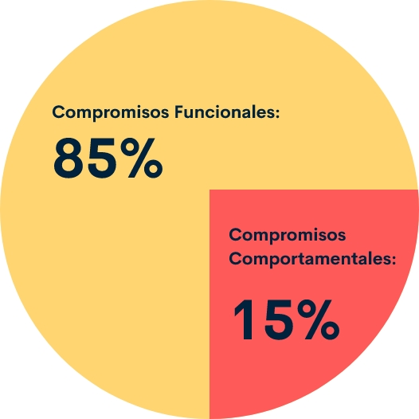
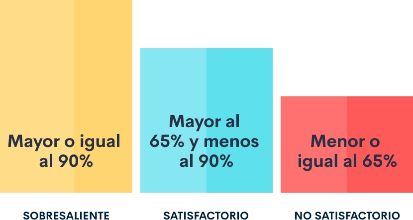

Introducción
Durante este segundo componente, abordaremos lo implícito para identificar los factores que intervienen en el Sistema de Evaluación del Desempeño según el marco normativo y lineamientos de la Comisión Nacional del Servicio Civil – (CNSC). Es así, como se abordará el cambio que se da a partir del 1 de febrero de 2019, donde se deroga el Acuerdo 565 de 2016 de la CNSC y entró en vigencia el Acuerdo 617 de 2018, expedido por la CNSC, el cual establece el Sistema Tipo de Evaluación de Desempeño Laboral para los servidores de carrera administrativa y en periodo de prueba, de las Entidades del Estado que no cuenten con sistemas propios aprobados por la CNSC.
El Sistema de Evaluación es una gran herramienta de gestión para las entidades públicas, permitiendo el seguimiento durante la totalidad del periodo de evaluación, identificando las competencias que se deben fortalecer para lograr una adecuada prestación de bienes y servicios que respondan a las necesidades y expectativas de la ciudadanía, para lograr impacto en el cumplimiento de objetivos de la entidad.
1. Sistema tipo de evaluación de la CNSC
El sistema de Evaluación Tipo de la Comisión Nacional del Servicio Civil (CNSC), reglamentado por el Acuerdo 617 de 2018, establece los elementos para la Evaluación de Desempeño Laboral de los servidores de carrera administrativa y en periodo de prueba, mediante la aplicación de diferentes fases y con la participación de diversos actores. Este Sistema debe ser adoptado por las Entidades del Estado que aún no cuenten con sistemas propios.
1.1 Definición
La Evaluación del Desempeño Laboral es un procedimiento para medir el avance, cumplimiento o incumplimiento de los compromisos laborales del empleado que ocupa un puesto de trabajo, dichos compromisos contribuyen al logro de las metas institucionales.
1.2 Finalidad
La Finalidad de la Evaluación del Desempeño, del Sistema Tipo de la CNSC, se encuentra definida en el Artículo 1 del Acuerdo 617 de 2018 de la siguiente forma:
Es una herramienta de gestión objetiva y permanente, encaminada a valorar las contribuciones individuales y el comportamiento del evaluado, midiendo el impacto positivo o negativo en el logro de las metas institucionales. Esta evaluación de tipo individual permite así mismo medir el desempeño institucional.

1.3 Actores del proceso de evaluación del desempeño
Los Actores que hacen parte del proceso de Evaluación del Desempeño Laboral (EDL) del Sistema Tipo de la CNSC, quienes actúan de acuerdo a las funciones que les corresponde, son:
- Comisión nacional del servicio civil
- Jefe de la entidad
- Jefe de la oficina de planeación o quien haga sus veces
- Jefe de la oficina de control interno o quien haga sus veces
- Jefe de la de unidad de personal o quien haga sus veces
- Evaluados y evaluadores
- Comisión de personal.
A continuación las funciones de los Actores del Proceso de EDL, definidas en el Anexo Técnico del Acuerdo 617 de 2018.
Comisión Nacional Del Servicio Civil
“Socializar el sistema tipo de evaluación del desempeño laboral a través de los medios de divulgación que considere pertinentes”.
Jefe de la entidad
“Desarrollar su propio sistema de evaluación del desempeño laboral y en el entretanto adoptar el Sistema Tipo de Evaluación del Desempeño Laboral establecido por la CNSC”.
Jefe de la oficina de planeación o quien haga sus veces
Publicar a más tardar el treinta y un (31) de enero de cada año, las metas por áreas o dependencias de cada vigencia. (Artículo 74 de la Ley 1474 de 2011).
Publicar los avances logrados por las áreas o dependencias en la ejecución de sus metas de la vigencia inmediatamente anterior conforme lo determina la ley.
Jefe de la oficina de control interno o quien haga sus veces
Dar a conocer a los evaluadores el resultado de la Evaluación de Gestión por Áreas o Dependencias del año inmediatamente anterior, para que se tenga como uno de los criterios en la concertación de los compromisos del siguiente período de evaluación.
Jefe de la unidad de personal o quien haga sus veces
-
Poner en funcionamiento el sistema de evaluación del desempeño al interior de la entidad, bien sea el sistema propio o excepcionalmente el sistema tipo diseñado por la CNSC.
-
Divulgar las disposiciones legales y reglamentarias relacionadas con la Evaluación del Desempeño Laboral.
Diseñar y administrar el programa de capacitación en materia de Evaluación del Desempeño Laboral.
-
Tener en cuenta los resultados de la Evaluación del Desempeño Laboral, para establecer los planes de: Estímulos, Capacitación y Bienestar de la entidad.
-
Conformar las Comisiones Evaluadoras, cuando haya lugar a ello, para el período de evaluación correspondiente.
Comisión de personal
“Resolver en única instancia, las reclamaciones que formulen los evaluados inconformes con los compromisos. (Literal b del artículo 16 de la Ley 909 de 2004)”.
Evaluados y Evaluadores
De esta manera, el Anexo Técnico del Acuerdo 617 de 2018. También lo aborda como, Participar de manera activa en las diferentes fases que integran el proceso de evaluación del desempeño laboral: concertación de compromisos y sus seguimientos, acordar compromisos de mejoramiento individual cuando sea necesario, presentar las evidencias que se generen durante el período de evaluación. Corresponde al evaluador diligenciar los instrumentos de evaluación del desempeño laboral.
1.4 comisión evaluadora
Las Comisiones Evaluadoras, son responsables de llevar a efecto la evaluación del desempeño laboral de los empleados de carrera administrativa y empleados en periodo de prueba.
En el Anexo Técnico del Acuerdo 617/18 se define que si el jefe inmediato del Evaluado es de carrera, con nombramiento en provisionalidad, o se encuentra en período de prueba; el Jefe de Talento Humano o quien haga sus veces deberá conformar la Comisión Evaluadora desde el inicio del proceso de evaluación del desempeño laboral. Esta Comisión estará integrada por el jefe inmediato del evaluado y un servidor de libre nombramiento y remoción, y actuará desde la concertación de compromisos laborales hasta que la calificación se encuentre en firme.
El empleado de libre nombramiento y remoción de la Comisión Evaluadora tiene la responsabilidad de evaluar, si el empleado de carrera, provisional o en período de prueba pierde la calidad de Jefe inmediato.
1.5 Porcentajes de evaluación
Los compromisos Laborales (Funcionales y Comportamentales) que se convengan entre el Evaluado y el Evaluador, tienen un peso porcentual del 100%, distribuido de la siguiente manera:
Los compromisos funcionales están relacionados con los resultados, productos o servicios, que se evalúan de acuerdo al cumplimiento, en un rango de 1 a 100.
Los compromisos comportamentales hacen referencia al desempeño observado de la actitud o conducta que muestra el Servidor Público en el desarrollo de las funciones. Estos compromisos se evalúan de acuerdo al nivel de desarrollo de la competencia. El Decreto 815/18 define las Competencias Comportamentales comunes a los servidores públicos y por nivel jerárquico.
1.6 Niveles de desarrollo
En el Anexo Técnico del Acuerdo 617 de 2018, se describen los siguientes niveles de desarrollo con su correspondiente escala, para la evaluación de los compromisos comportamentales, y de acuerdo al resultado, se puede derivar un Compromiso de Mejoramiento Individual.
| Niveles de desarrollo | Descripción | Resultados numéricos |
|---|---|---|
| Bajo | En el Anexo Técnico del Acuerdo 617 de 2018, se describen los siguientes niveles de desarrollo con su correspondiente escala, para la evaluación de los compromisos comportamentales, y de acuerdo al resultado, se puede derivar un Compromiso de Mejoramiento Individual. | 4 a 6 |
| Aceptable | El nivel de desarrollo de la competencia se evidencia con mediana frecuencia, con un impacto parcial en la obtención de las metas y logros esperados. | 7 a 9 |
| Alto | El nivel de desarrollo de la competencia se evidencia de manera permanente e impacta ampliamente y de manera positiva en la obtención de las metas y logros esperados. | 10 a 12 |
| Muy alto | El nivel de desarrollo de la competencia se evidencia de manera permanente, impactando amplia y positivamente la obtención de las metas y logros esperados, e igualmente agregando valor en los procesos y resultados. | 13 a 15 |
1.7 Escala de calificación
La Escala de Calificación establece el rango para evaluar el Nivel de cumplimiento de los compromisos concertados entre el evaluado y el evaluador.
En el Artículo 10 del Acuerdo 617 de 2018, la Escala de Calificación del desempeño anual y en periodo de prueba, conforme al porcentaje que asigne el Evaluador para los Niveles establecidos. se encuentra de la siguiente forma:
1.8 Usos y consecuencias de los niveles de calificación
Los Usos y consecuencias de los Niveles de calificación de acuerdo al porcentaje obtenido, están contenidos en los artículos 12, 13, 14 y 15 de Acuerdo 617 de 2018, así:
- Adquirir derechos de carrera administrativa con la calificación definitiva en firme del Período de Prueba, tanto para el ingreso o el ascenso, como consecuencia de un concurso de méritos.
- Acceder a encargos cuando se cumpla con la totalidad de los requisitos establecidos en el artículo 24 de la Ley 909 de 2004.
- Acceder a comisiones para desempeñar empleos de libre nombramiento y remoción o de período fijo en los términos del artículo 26 de la Ley 909 de 2004.
- Acceder a los beneficios contenidos en el plan de estímulos de la entidad.
Para efecto del reconocimiento de incentivos institucionales se entenderá la calificación sobresaliente como equivalente al nivel de excelencia de que trata el Decreto 1083 de 2015 o las disposiciones que lo modifiquen, aclaren o sustituyan.
- Adquirir derechos de carrera administrativa con la calificación definitiva en firme del Período de Prueba, tanto para el ingreso o el ascenso, como consecuencia de un concurso de méritos.
- Permanecer en el servicio y conservar los derechos de carrera.
- Posibilidad de ser encargado, a discrecionalidad del nominador, cumpliendo con los demás requisitos establecidos en el artículo 24 de la Ley 909 de 2004. Siempre que no exista en la planta de personal, un servidor con derecho preferencial a ser encargado.
- Planificar la capacitación y la formación de los servidores públicos.
- Conceder becas o comisiones de estudio.
- Otorgar incentivos económicos o de otro tipo.
- Separación de la carrera administrativa y pérdida de los derechos inherentes a ella.
- Retiro del servicio.
- Pérdida del encargo y la obligación de regresar al empleo en el cual ostenta derechos de carrera.
- En firme la calificación no satisfactoria del período de prueba, el empleado debe regresar al cargo en que ostenta derechos de carrera.
Ejecutoriada la calificación no satisfactoria, se aplicará el procedimiento administrativo consagrado en la Ley 909 de 2004 y el Decreto Ley 760 de 2005 o las disposiciones que lo modifiquen, aclaren o sustituyan.
1.9 Instrumentos de evaluación
La Comisión Nacional del Servicio Civil (CNSC), ha dispuesto el Aplicativo EDL APP, como Instrumento para llevar a cabo el proceso evaluación del desempeño laboral en las Entidades públicas que aún no cuentan con sistemas propios aprobados por la Comisión.
Para el uso del aplicativo, se puede remitir a Ver el Anexo 1 Instructivo para el manejo del aplicativo:
Anexo. INSTRUCTIVO PARA EL MANEJO DE LA APLICACIÓNDE COMISIONES DE PERSONAL
1.10 Evaluación del teletrabajador
Las nuevas tecnologías de la información y la comunicación permiten realizar el trabajo en un lugar diferente a las instalaciones de la entidad, a lo que se denomina: Teletrabajo
De conformidad con lo establecido en la Ley 1221/18 y el Decreto 1072/15, Los servidores de carrera administrativa y en período de prueba serán evaluados con base en los parámetros establecidos por la CNSC en el Acuerdo 617 de 2018, su anexo técnico y los instrumentos de evaluación. (Artículo 19°. Evaluación del Teletrabajador).
1.11 Evaluación de servidores administrativos del sector educativo
Con respecto a la evaluación de los Servidores Administrativos del Sector Educativo, el Acuerdo 617 de 2018 en el artículo 20, establece que los compromisos serán concertados entre el rector o director rural y el servidor evaluado. Al Secretario de Educación o quien haga sus veces, le corresponde fijar uno de los compromisos para todos los servidores públicos que hacen parte de la planta administrativa de las instituciones educativas. Al final del periodo de evaluación el rector o director rural, según el caso, evaluará los compromisos.
Glosario
Calificación:la calificación corresponde a la asignación del porcentaje alcanzado por el evaluado, conforme a las evidencias que dan cuenta de su desempeño y comportamiento.
Carrera administrativa:sistema que regula el ingreso, permanencia, ascenso y retiro del personal, regulado por la función pública y la Comisión Nacional del Servicio Civil.
Competencias:es la capacidad de una persona para desempeñar, en diferentes contextos y con base en los requerimientos de calidad y resultados esperados en el sector público, las funciones inherentes a un empleo; capacidad que está determinada por los conocimientos, destrezas, habilidades, valores, actitudes y aptitudes que debe poseer y demostrar el empleado. (ESAP-DAFP – Guía para la formulación del PIC).
Comportamental:el término comportamental hace referencia a la actitud o conducta natural que muestra una persona en diferentes situaciones y lugares.
Compromisos laborales:son aquellos que evidencian las competencias funcionales del empleo y las competencias comportamentales que debe acreditar todo servidor público en el ejercicio del empleo.
Desempeño:conductas laborales del empleado en el cumplimiento de sus funciones. El desempeño se considera también como el desarrollo de los compromisos en relación a las metas deseadas por la entidad.
Empleo público:es el conjunto de funciones, tareas y responsabilidades que se asignan a una persona y las competencias requeridas para llevarlas a cabo, con el propósito de satisfacer el cumplimiento de los planes de desarrollo y los fines del estado. (artículo 19 Ley 909 de 2004).
Evaluación:la evaluación consiste en estimar de forma permanente los conocimientos, destrezas, actitudes, habilidades, aptitudes y rendimiento de los evaluados durante el período respectivo.
Evaluado:empleado de carrera o en período de prueba que presta sus servicios en una entidad cuyo sistema de carrera administrativa se encuentre administrado y vigilado por la CNSC.
Evaluador:es el jefe inmediato del servidor de carrera o en período de prueba, responsable de evaluar su desempeño, quien deberá ostentar un grado igual o superior al evaluado.
Evidencias:son los elementos que permiten establecer de manera objetiva equitativa y transparente el avance, cumplimiento o, incumplimiento de los compromisos que se han generado durante el período de evaluación.
Función pública:aquella que está al servicio de los intereses generales y prestación de servicios a cargo del Estado, a través de sus servidores, y se desarrolla con fundamento en los principios de igualdad, moralidad, eficacia, economía, celeridad, imparcialidad y publicidad (artículo 209 Constitución Política y 2° Ley 909 de 2004).
Metas institucionales:para los fines de la evaluación del desempeño, las metas institucionales son las establecidas por la alta dirección de la entidad, de conformidad con los planes, programas, proyectos o planes operativos anuales por área o dependencia, encaminada al cumplimiento de los objetivos y propósitos de la entidad.
Periodo de prueba en empleo de carrera:el empleado con derechos de carrera administrativa que supere un concurso para un empleo de carrera será nombrado en período de prueba y su empleo se declarará vacante temporal mientras dura el período de prueba.
Teletrabajo:en Colombia, el teletrabajo se encuentra definido en la Ley 1221 de 2008 como: "Una forma de organización laboral, que consiste en el desempeño de actividades remuneradas o prestación de servicios a terceros utilizando como soporte las Tecnologías de la Información y Comunicación -TIC- para el contacto entre el trabajador y la empresa, sin requerirse la presencia física del trabajador en un sitio específico de trabajo". (Artículo 2, Ley 1221 de 2008).
Teletrabajador:el teletrabajador es el empleado que utiliza las tecnologías de la información y comunicación para la realización de las funciones u obligaciones de su empleo.
Material complementario
| Nombre del documento o material. | Tipo de material. | Enlace del Recurso. |
|---|---|---|
| Acuerdo 617 de 2018 Por el cual se establece el Sistema Tipo de Evaluación del Desempeño Laboral de los Empleados Públicos de Carrera Administrativa y en Período de Prueba. Bogotá, D.C., 10 de octubre de 2018 | Acuerdo | Ver documento |
| Anexo Técnico del Sistema Tipo de Evaluación del Desempeño. Bogotá, D.C., 10 de octubre de 2018 | Anexo del Acuerdo 617/18 | Ver documento |
| Instructivo para el manejo del aplicativo | Documento | Ver documento |
Referencias bibliográficas
Acuerdo 617 de 2018 Por el cual se establece el Sistema Tipo de Evaluación del Desempeño Laboral de los Empleados Públicos de Carrera Administrativa y en Período de Prueba. Bogotá, D.C., 10 de octubre de 2018.https://www.funcionpublica.gov.co/eva/gestornormativo/norma.php?i=90685
Anexo Técnico del Sistema Tipo de Evaluación del Desempeño. Bogotá, D.C., 10 de octubre de 2018.https://www.funcionpublica.gov.co/eva/gestornormativo/norma.php?i=90685
Constitución Política de Colombia. (1991). (Capítulo 2: De la Función pública Art. 122, 123, 125,130) República de Colombia.
Decreto 1227 de 2005 Por el cual se reglamenta parcialmente la Ley 909 de 2004 y el Decreto Ley 1567 de 1998. Capitulo IV. (2005, 25 de abril). Bogotá, D.C., 21 de abril de 2005.https://www.funcionpublica.gov.co/eva/gestornormativo/norma.php?i=16313
Decreto Ley 760 de 2005 Por el cual se establece el procedimiento que debe surtirse ante y por la Comisión Nacional del Servicio Civil para el cumplimiento de sus funciones. (Título VII Procedimiento para la notificación de la calificación de los empleados de carrera (Art.33 al 40). Bogotá, D. C., 17 de marzo de 2005.https://www.funcionpublica.gov.co/eva/gestornormativo/norma.php?i=16124
Decreto 1083 de 2015 Por medio del cual se expide el Decreto Único Reglamentario del Sector de Función Pública. (Titulo 8 Evaluación del Desempeño y calificación de servicios. Capítulo 1: Evaluación del desempeño laboral Capitulo 2: Evaluación y calificación del período de prueba). Bogotá, D.C., 26 de mayo de 2015.https://www.funcionpublica.gov.co/eva/gestornormativo/norma.php?i=62866
Decreto 815 de 2018 Por el cual se modifica el Decreto 1 083 de 2015, Único Reglamentario del Sector de Función Pública, en lo relacionado con las competencias laborales generales para los empleos públicos de los distintos niveles jerárquicos. Bogotá, D.C 8 de mayo de 2018.https://www.funcionpublica.gov.co/eva/gestornormativo/norma.php?i=86304
Ley 909 de 2004 Por la cual se expiden normas que regulan el empleo público, la carrera administrativa, gerencia pública y se dictan otras disposiciones. Bogotá, D. C., 23 de septiembre de 2004.http://www.secretariasenado.gov.co/senado/basedoc/ley_0909_2004.html